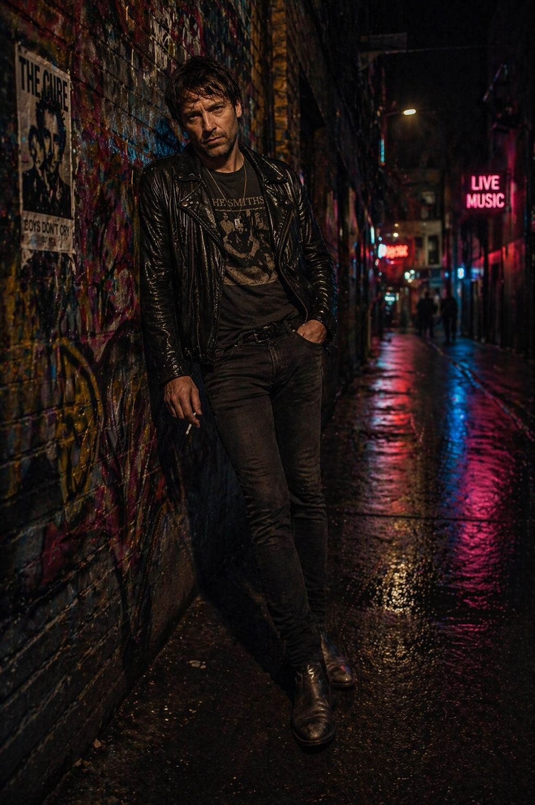
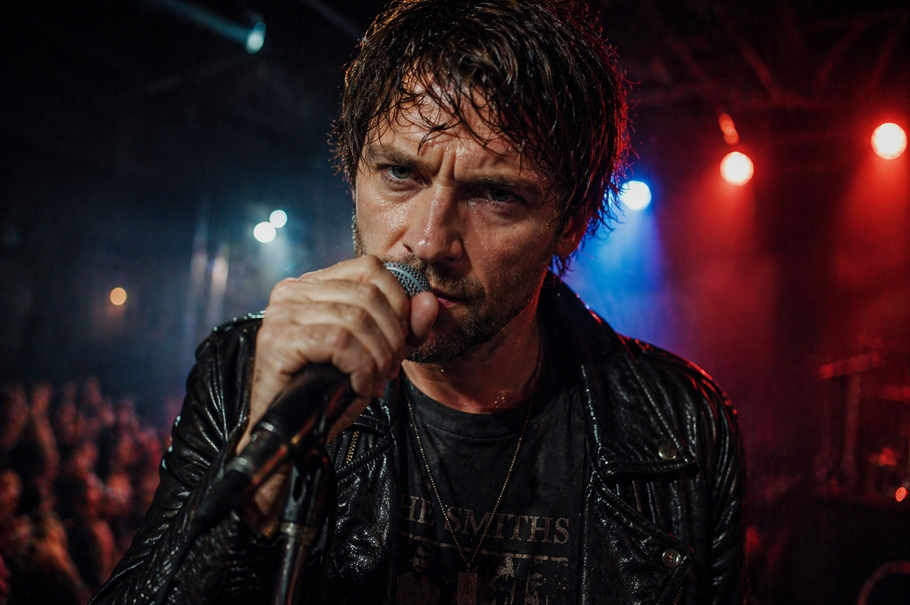
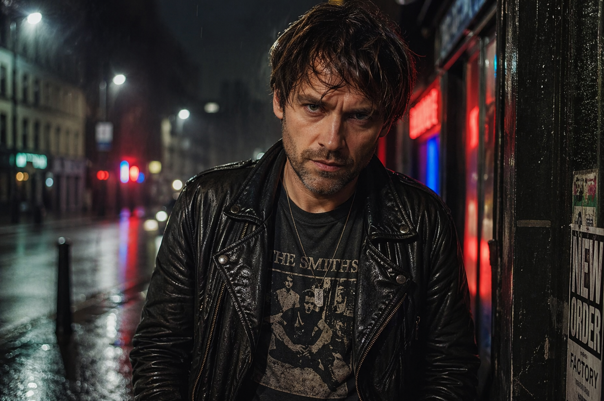

Bienvenido a la página web de Jack Ravenwood, un cantante ficticio creado con inteligencia artificial.
En esta web presentamos la canción “Broken Streets”, junto con su historia, estilo musical y el proceso creativo.
Este proyecto consiste en crear una canción utilizando IA y diseñar una página web para presentar al artista inventado.



Autor: Jack Ravenwood
Género: Rock
Edad: 32 años
Origen: Manchester, Inglaterra
Estilo: Rock alternativo con influencias de britpop y grunge
Descripción: Canción intensa sobre la vida en barrios obreros y la lucha personal.
Jack Ravenwood nació en un barrio obrero de Manchester, rodeado de fábricas abandonadas y grafitis. Desde pequeño mostró interés por la música gracias a su padre, un exguitarrista que le enseñó a tocar.
Durante su adolescencia fue rebelde y encontró refugio en la música, escribiendo letras llenas de emoción.
Su salto a la fama llegó cuando publicó “Broken Streets” en internet, volviéndose viral.
Es conocido por su voz rasgada y sus letras sobre la vida y la sociedad.
Verse 1:
I walk alone through broken streets
Neon lights and shattered dreams
Voices echo in my head
All the words we left unsaid
Pre-Chorus:
Every night I feel the same
Running wild but stuck in chains
Chorus:
I’m screaming out into the dark
Trying to find a missing spark
If I fall, will I be free?
Or just another memory?
Verse 2:
Cold wind cuts like shattered glass
Moments fade but never pass
I see your shadow in the rain
Calling out my name again
Pre-Chorus:
Every scar I try to hide
Burns like fire deep inside
Chorus:
I’m screaming out into the dark
Trying to find a missing spark
If I fall, will I be free?
Or just another memory?
Bridge:
If I break, don’t let me go
Hold the pieces, let me know
There’s a reason I still fight
Through the chaos, through the night
Final Chorus:
I’m screaming out into the dark
Still chasing down that fading spark
If I fall, remember me
More than just a memory
Autor: Jack Ravenwood
Género: Rock alternativo
Edad: 32 años
Origen: Manchester, Inglaterra
Estilo: Grunge / Britpop
Descripción: Canción sobre la lucha en una ciudad destruida por la vida moderna.
“City of Ashes” refleja el caos urbano, la pérdida de identidad y la lucha interna del protagonista.
Verse 1:
Rain falls hard on the avenue
Broken glass under worn-out shoes
Sirens cry through the midnight haze
Another kid trying to escape the maze
Pre-Chorus:
And I keep running from the ghost inside
A thousand scars that I can’t hide
Chorus:
We’re the kings of a city of ashes
Burning bright while the whole world crashes
No tomorrow, no place to hide
Just broken hearts and a reckless ride
Oh, we rise when the lights go down
Lost souls screaming through this town
Verse 2:
Old tattoos and nicotine dreams
Nothing here is what it seems
Your voice still echoes in these halls
Like faded names on ruined walls
Pre-Chorus:
Every memory cuts so deep
Still awake when the streets all sleep
Chorus:
We’re the kings of a city of ashes
Burning bright while the whole world crashes
No tomorrow, no place to hide
Just broken hearts and a reckless ride
Oh, we rise when the lights go down
Lost souls screaming through this town
Bridge:
If the sky falls over me tonight
I’ll still be singing through the firelight
No regrets, no turning back
Just smoke and shadows dressed in black
Final Chorus:
We’re the kings of a city of ashes
Holding on while the flame still flashes
If we fall, let the world recall
We were alive through it all
Crear una canción de un cantante inventado mediante inteligencia artificial.
ChatGPT y Suno.
Crear un cantante inglés de rock, su historia y la letra de una canción.
Se generó la letra con IA y se definió el estilo rock. Después se hicieron pequeñas modificaciones manuales.
Cuando se utiliza inteligencia artificial para crear música, es importante hacerlo de forma responsable y respetando los derechos de autor y las licencias de uso. Para evitar problemas legales, lo primero es revisar las condiciones de la herramienta de IA que se utiliza, ya que cada plataforma establece normas diferentes sobre la propiedad y el uso comercial de las canciones generadas. Algunas permiten que el usuario tenga todos los derechos sobre la obra, mientras que otras conservan parte de ellos o limitan su monetización. Además, es fundamental utilizar recursos con licencias claras. Si se emplean samples, loops, voces, bases musicales o imágenes creadas por terceros, hay que comprobar qué tipo de licencia tienen y si permiten modificaciones o uso comercial. En muchos casos también es obligatorio dar crédito al autor original, especialmente cuando se usan licencias Creative Commons del tipo “CC BY”. Otro aspecto importante es evitar las imitaciones exactas de artistas reales. Aunque la IA pueda generar canciones muy parecidas al estilo de un cantante o incluso copiar su voz, esto puede infringir derechos de autor y derechos de imagen. Por eso, la inteligencia artificial debe entenderse como una herramienta de apoyo creativo y no como un medio para copiar obras existentes. En conclusión, para usar IA en la creación musical de forma segura y ética, se recomienda crear contenido original, leer siempre las licencias de uso, dar créditos cuando sea necesario y evitar copiar canciones, voces o estilos reconocibles de otros artistas.
El copyright protege obras originales: música, letras, voces, samples, portadas, etc. Qué no puedes hacer Copiar una canción existente y “hacerla parecida”. Usar melodías, letras o samples protegidos sin permiso. Clonar la voz de un cantante famoso sin autorización. Entrenar o pedir a una IA que imite exactamente a un artista. Qué sí puedes hacer Crear música original con IA. Inspirarte en géneros (“estilo synthwave”, “rock alternativo”, etc.). Usar contenido con licencia libre o permiso explícito. El copyleft viene del software y algunas obras culturales. Puedes usar y modificar la obra, pero debes compartir tu versión con la misma licencia. Las licencias Creative Commons permiten usar obras bajo ciertas condiciones. Las más comunes: CC BY: usar incluso comercialmente, dando crédito CC BY-SA: Igual que BY, pero compartiendo igual CC BY-NC: No uso comercial CC BY-ND: No modificar CC0: Dominio público, casi sin restricciones
Reconocer el uso de herramientas digitales y evitar el plagio.